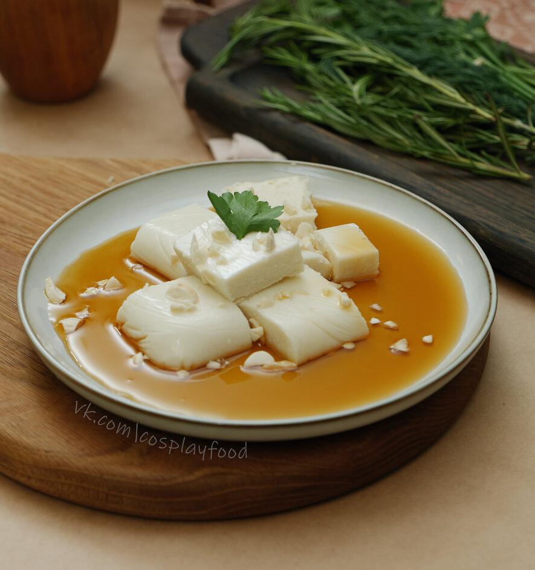

 Ингредиенты:
- сырой миндаль 100г
- молоко 500г
- сахар 70г
- агар-агар 10г
Способ приготовления:
- Замачиваем сырой миндаль в воде. Желательно в кипяченой и теплой и оставляем на ночь. Если планируете готовить «миндальный тофу» вечером, в течение дня можно поменять воду в миндале 2-3 раза.
- Очищаем миндаль от кожицы и промываем.
- После набухания наш миндаль набирает в весе, поэтому снова отмерьте 100 гр., а оставшийся миндаль порубим для украшения блюда.
- Подогреваем наше молоко с сахаром в сотейнике, но не кипятим, чтобы растворить сахар.
- Начинаем в блендере молоть миндаль до состояния мелкой крошки.
- По чуть-чуть добавляем наше теплое молоко в блендер и взбиваем вместе с миндалём.
- На этом этапе вы почувствует нежный тонкий аромат миндаля и получится густая пенка.
- Переливаем наше миндальное молочко назад в сотейник и добавляем агар-агар. Тщательно перемешиваем и оставляем агар-агар набухать на 20-30 минут.
- После этого снова ставим сотейник на плиту и доводим наше миндальное молоко до кипения.
- Переливаем в форму для застывания. У меня это обычные контейнеры для еды. Даем остыть и принять форму нашему «миндальному тофу» на 20-30 минут.
- Убираем охлаждаться в холодильник на ночь или минимум 4 часа.
Подача:
Нарезаем тофу кубиками, выкладываем на тарелку 5 кубиков и поливаем карамельным или любым другим сиропом по вкусу. Украшаем листиком мяты.
Приятного аппетита!